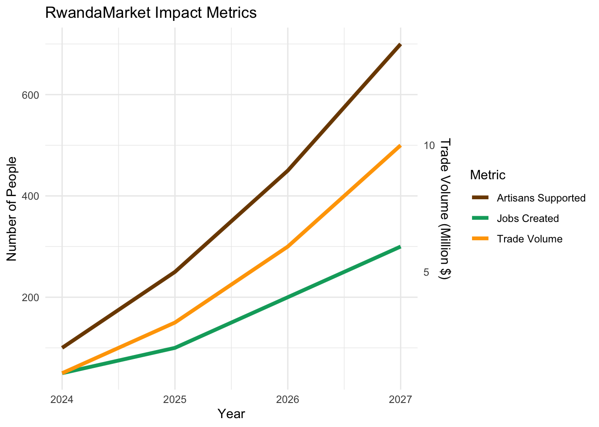

Our Impact
At RwandaMarket, we believe in creating positive change through our business activities. Our impact spans social, economic, and environmental dimensions, benefiting communities in both Rwanda and Kenya.
Economic Impact
Job Creation
- [PLACEHOLDER: Number] jobs created in Rwanda (artisans and logistics)
- [PLACEHOLDER: Number] jobs created in Kenya (retail and operations)
Boosting Cross-Border Trade
- Facilitating increased trade volume between Rwanda and Kenya
- Supporting small and medium enterprises in navigating international markets
Environmental Impact
Sustainable Sourcing
- Promotion of eco-friendly production methods
- Use of renewable materials in product packaging
Carbon Footprint Reduction
- Optimization of logistics to reduce transportation emissions
- Investment in carbon offset projects in East Africa
Community Initiatives
- Educational scholarships for artisans’ children
- Health and wellness programs in partner communities
Future Impact Goals
- Expand artisan network to [PLACEHOLDER: Number] cooperatives by 2028
- Achieve carbon neutrality in our operations by 2030
- Establish a vocational training center for traditional crafts in Rwanda
RwandaMarket is committed to growing our business responsibly, ensuring that our success translates into positive outcomes for the communities we serve.
Social Impact
Empowering Artisans
Preserving Cultural Heritage